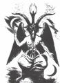
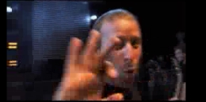
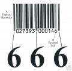

Legalább megdöbbentő, de a
többség számára rémisztő a felismerés: a mindennapjainkban megismert
szimbólumok, az általunk használt jelzések, rajzok sok esetben sátánista
jelképek. A szabadkőművesség és a hozzá közel álló kabbalizmus, illetőleg az
ebből kiváló Anton Szandor LaVey-féle sátánizmus (ez a magyar származású zsidó
alkotta meg a földi sátánizmust) jelképei visszakösszönnek itt-ott. Az ok, hogy a
zsidó kabbalizmus és a sátánizmus jelképei így összefonódtak, érinti a
szabadkőművesség és a cionizmus az 1700-as években kezdődő kapcsolatát. Azt látnunk
kell, hogy egy ilyen hatalmas és spiritualizmussal bőven átitatott szervezet
bizony komoly szimbólumrendszerrel és hitvilággal kell, hogy rendelkezzék, ez a
világ pedig szorosan kapcsolódik az általunk alviláginak nevezett jelképekkel és
legendákkal.
A legismertebb félreértelmezett jel a békejelnek nevezett
szimbólum, amelyet 1958-ban alkotott meg még a nukleáris fegyverek ellenzői számára
Gerald Holtom. A szimbólum érdekessége, hogy a Néró gyűrűjének is nevezett
halálrúnán alapul: éppen azon, amit a II. világháborúban a nácik is a tömegsírok
fölé rajzoltak. Most tehát azzal a jelképpel tüntetnek sokan éppen a békéért,
amit egyes sátánisták is használnak.
A békejel és a
halálrúna
A gyógyszertárak címerében gyakran lehet látni egy szárnyas
botot, amelyre két kígyó mászik föl. Ezt
Aszklépiusz botjának szokták
nevezni, de ez óriási tévedés: a gyógyítás ókori görög istenének, Aszklépiusznak
csupán egyetlen kígyó által megmászott bot a jelképe. A két szembefordult kígyó a
szárnyas boton a
caduceus, vagyis hírnökbot, amely Hermész
istené volt. Hermész botját szokták a bibliai Mózes, a zsidók királyának kígyóvá
változó botjához hasonlítani. Hermész azonban többek között a kereskedelem
istene, azaz a gyógyítás helyett a kereskedelem szimbóluma csüng a patikák
falán...
Hihetetlen véletlennek tűnik, hogy Baphomet ölében éppen
ilyen jelkép szerepel. Az ő imádatát újította föl LaVey, mikor a modern földi sátánizmus
egyik tisztelt alakjává választotta: azóta beszélünk úgynevezett
Baphomet-pecsétről.
Baphomet és ölében a
caduceus A mindennapi kézmozdulataink is ősi jelképeket újítanak meg, és
adnak nekik új jelentést. Manapság valamilyen homályos okból azt, hogy valami
rendben van, az összeérintett hüvelyk- és mutatóujjunkkal jelezzük, miközben másik
három ujjunk normális állapotban, a levegőben van. Régen ez a bestiális számnak
(egyes vélekedések szerint az ember számának), azaz a 666-nak a jele volt. A két
ujj föltartása pedig a szarvval rendelkező isten (azaz Lucifer)
szimbóluma.
 A sátán kézjele
A sátán kézjeleA mutató- és a kisujj kinyújtása
és a középső és gyűrűsujj behajtása a hüvelyujj állapotától függetlenül a sátán
egyházában és a szabadkőművesség különböző páholyaiban, illetve az
Illuminátusoknál is üdvözlési forma. Talán véletlen egybeesés ez is, mint a
világ ismert vezetőinek gyakori kézmozdulatában...
Szeretik ezt a jelet mutatni Talán az is csupán az ostoba
egybeesések műve, hogy mind gyakrabban és gyakrabban találkozni ezekkel a
jelekkel: már nem csupán a világ vezetői (és itt elkezdhetjük idősebb Bushtól
kezdve Clintonon át Putyinig vagy akár Tony Blairig
nézegetni
a képeket, amelyek a furcsa kézmodultatot mutatják), hanem mások is, köztük
képregényhősök és zenészek használják.
Nem kell messzire menni, csak egy nagyon
aktuális videoklip: a Nickelback mostanság játszott
zenés filmecskéjének végén
a közönség a megszokott kétujjas jellel tombol a színpad felé, mire az ott
tartózkodó egyik zenekari tag a fönt már említett összeérintett hüvelyk- és
mutatóujjas jellel válaszol. A közönség biztosan csak megszokásból mutatja a sátán
jelét, hiszen nem tudják, hogy mi az, de érdekes, hogy egy bandatag éppen egy
másik hasonló kézjellel válaszol... Ismét egy véletlen! (Csupán zárójeles megjegyzésben
érdemes megemlíteni a világ leghíresebb
backmasking-jét: a Led Zeppelin zenekar szerint pusztán véletlen, hogy a
Stairway to Heaven című számuk egy részének visszafelé való lejátszásával egy, a Gonoszt
éltető üzenet hangzik el.)

A Nickelback-klipben csak néhány pillanatra
látható
mozdulat: éppen a jellegzetes sátánista
köszöntésre érkező válasz
Természetesen
ezután csak kacagunk az olyan véletleneken, mint az, hogy a világ valamennyi
vonalkódján (leellenőrizheted: végy csak elő bármit, amit ma vettél!) három
elválasztó elem szerepel, még akkor is, ha a kódsor elejére és végére elvileg nem is
kellene feltétlenül. Mindhárom két függőleges vonal: éppen ugyanaz, mint a
számsorban a hatos kódja, csak éppen kicsivel hosszabb. Három hatos jel...
Döbbenetes véletlenek vannak!
A világ valamennyi vonalkódja tartalmazza 666-os számot Ezek
után házi feladat lehetne kiszámolni egy matematikushallgatónak, hogy mennyi az
esély az alábbi véletlenre: a Lucifer szemeként ismert mindent látó szem
legyen egyben szabadkőműves jelkép, ha egy piramis fölött szerepel, amely
piramis éppen tizenhárom lépcsőfokból áll, mely 13-as szám kabbalista
szerencseszám, s ezen szimbólum a
Novus Ordum
Seclorum szövegsorral szerepeljen azon egydolláros bankjegy hátulján, amelyet
gazdaságosságtalansága miatt már évek óta próbálnak visszavonni, de egy
ismeretlen érdekcsoport mindig harcol a megmaradásáért...
A nem túl valószínű véletlen


 Ez a bejegyzés közvetlenül kapcsolódik két másik
Bombagyár-íráshoz:
Ez a bejegyzés közvetlenül kapcsolódik két másik
Bombagyár-íráshoz: